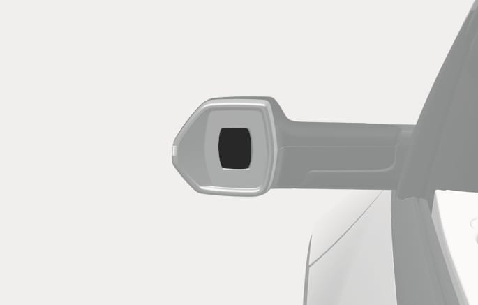
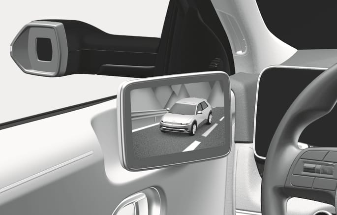
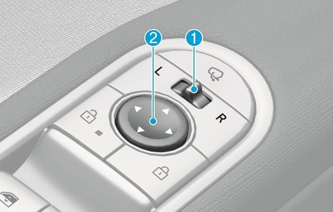
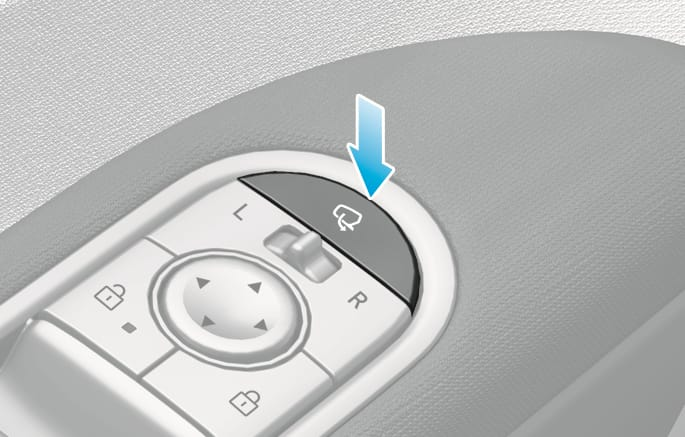
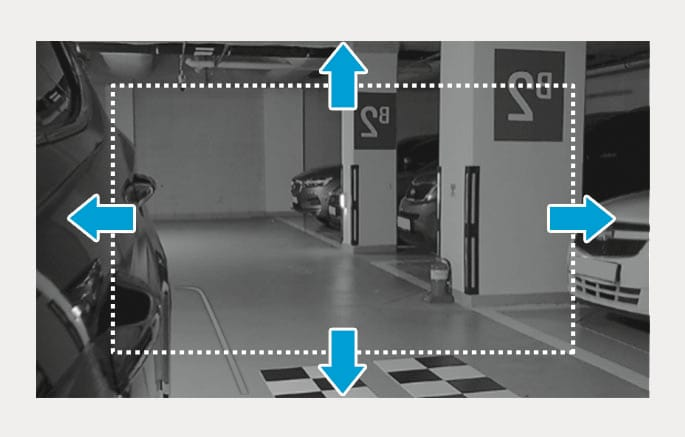
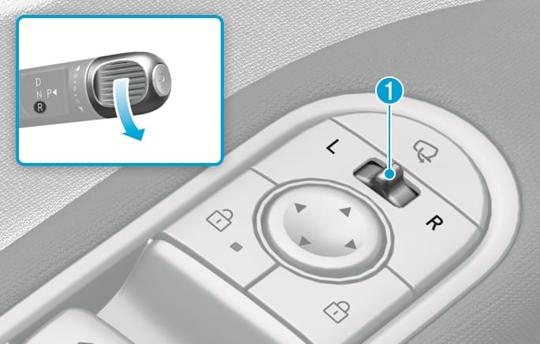

디지털 사이드 미러 (DSM)

2C_DSMcamera

2C_DSMcamera_2
디지털 사이드 미러는 차선을 바꿀 때 따라오는 차량의 영상을 차 안에서 모니터로 확인하여 안전하게 차선을 바꿀 수 있도록 도와주는 사이드 미러 대체 장치입니다.
-
DSM 모니터 화면 밝기는 클러스터 조명 밝기와도 연동됩니다.
-
DSM 카메라 각도는 운전 자세 메모리 시스템과도 연동됩니다.
-
DSM은 Digital Side Mirror의 약자입니다.
주행 중에 DSM 카메라를 조절하거나 접지 마십시오. 운전에 영향을 미처 사고의 원인이 됩니다.
-
디지털 사이드 미러는 후방 시야를 영상으로 표현하기 때문에 실제와 다르게 보일 수 있으며 설정된 위치 이외의 시야를 볼 수 없습니다. 운전 시 각별히 주의하십시오.
-
DSM 모니터는 직사광선과 같은 강한 광원에 의해 화면이 흐리게 보일 수 있고, 빛 번짐 및 후방 차량 의 전조등 광원 등에 의해 모니터 화면이 일시적으로 가려질 수 있습니다. 실내 미러 등을 이용하여 차량 주변 시야를 확보하십시오.
-
특정 상황에서 DSM 모니터의 초점이 맞지 않거나 색상이 실제와 다르게 보이는 등 영상 오류가 발생할 수 있습니다. 이로 인해 움직이는 사물을 뚜렷이 보기 힘들고, 모니터를 오래 보면 눈이 피로해질 수 있습니다.
-
주행 중에는 항상 차량의 상태에 주의를 기울이십시오. 이상이 있다고 판단되면 즉시 안전한 장소에 정차한 후 가까운 당사 직영 하이테크센터나 블루핸즈에 문의해 점검 및 정비를 받으십시오.
-
DSM 모니터가 선명하게 보이지 않을 경우, 렌즈가 오염되었거나 렌즈에 김이 서려 있을 수 있습니다. 카메라 렌즈를 닦거나 열선을 작동시켜 습기 또는 이물을 제거한 후에 주행하십시오. 렌즈 표면이 손상되지 않도록 주의하여 닦고, 열선 작동에 의해 화상을 입지 않도록 주의하십시오.
DSM 모니터 켜기
도어 잠금을 해제하거나 원격 시동을 걸면 작동 준비 상태가 되고, 도어를 열거나 DSM 카메라를 펼치면 DSM 모니터가 켜집니다.
DSM 모니터 끄기
-
시동을 끄고 도어를 잠그거나 시동을 끈 지 7분이 지나면 DSM 모니터가 자동으로 꺼지고 DSM 카메라가 접힙니다.
-
시동이 걸려 있을 때 DSM 카메라를 접으면, DSM 모니터에 검정 화면과 함께 사이드 미러 접힘 안내문이 표시됩니다.
-
시동 여부와 도어 상태 등 조건에 따라 DSM 모니터의 전원이 자동으로 켜지거나 꺼집니다.
DSM 모니터에 표시되는 경고등 및 표시등은 다음과 같습니다.
|
|
운전자 보조 기능 경고등
|
|
|
디지털 사이드 미러 점검 표시등 |
|
|
모니터 꺼짐 표시등
|
|
|
와이드 뷰 모드 변환 표시등 |
차선 변경을 위해 방향지시등을 켜면 DSM 모니터에 후방 화면과 함께 차선 변경 보조 안내선이 표시됩니다.
-
빨간색: 차량 후방에서 3 m 떨어진 지점
-
주황색: 차량 후방에서 12 m 떨어진 지점
기능 설정하기
시동 'ON' 상태에서 인포테인먼트 시스템의 설정 > 차량 > 편의 > 후방 거리 표시선을 눌러 기능을 켜거나 끄십시오.
인포테인먼트 시스템은 업데이트 시 변경될 수 있습니다. 자세한 내용은 인포테인먼트 웹매뉴얼을 참고하십시오.
안내선 표시 조건
-
방향지시등 켜짐
안내선 표시 해제 조건
-
시동 'OFF' 상태
-
방향지시등 꺼짐
-
비상 경고등 켜짐
-
차선 변경 보조 안내선은 차량 및 도로의 상태에 따라 실제와 다를 수 있습니다.
-
차선을 변경할 때는 미리 방향지시등을 켜고, 진입할 차선에 안전거리가 충분히 확보되었는지 확인한 후 진입하십시오.

2C_AdjustSideViewMirror
-
시동 'ACC', 'ON' 또는 시동이 걸린 상태에서 DSM 카메라 조절 선택 레버(1)를 움직여 L (운전석) 또는 R (동승석)을 선택하십시오.
-
DSM 카메라 조절 스위치(2)를 사용해 각도를 조절하십시오.
DSM 카메라 각도는 반드시 조절 스위치를 사용해 조절하십시오. 손으로 잡아서 조절하면 관련 부품이 손상될 수 있습니다.
DSM 카메라 접이 버튼

2C_FoldSideViewMirror
DSM 카메라를 접거나 펴려면 DSM 카메라 접이 버튼을 누르십시오.
도어 잠금 해제 시 (인포테인먼트 시스템)
인포테인먼트 시스템의 설정 > 차량 > 라이트 >웰컴 미러 > 도어 잠금 해제 시를 선택할 경우,
-
도어를 잠그면 DSM 카메라가 접히고, 잠금 해제하면 DSM 카메라가 펴집니다..
-
스마트 키의 도어 잠금/잠금 해제 버튼 누름
-
앞좌석 바깥쪽 도어 핸들에 있는 도어 잠금/잠금 해제 센서부(음각 부분) 터치
-
도어 잠금 해제 시가 선택되어 있으면 운전자 접근 시를 선택할 수 있습니다. 운전자 접근 시를 선택할 경우, 시동이 꺼진 상태에서 스마트키를 휴대해 차량으로 접근하면 DSM 카메라가 펴집니다.
인포테인먼트 시스템은 업데이트로 변경될 수 있습니다. 자세한 내용은 인포테인먼트 시스템 웹 매뉴얼을 참고하십시오.
운전자의 안전을 위해 15 km/h 이상의 속도로 주행 중일 때는 DSM 카메라가 접히지 않습니다.
-
시동이 꺼져 있어도 조작이 가능하나, 과도하게 조작하면 배터리가 방전될 수 있습니다.
-
DSM 카메라를 접거나 펼 때는 반드시 접이 버튼을 사용하십시오. 손으로 접거나 펼 경우 모터가 고장 날 수 있습니다. 또한 주행 중에 DSM 카메라에서 진동이나 소음이 발생할 수 있으며, 이는 기어가 정확하게 맞물리지 않았음을 나타냅니다. 이때에는 접이 버튼으로 다시 접었다가 펴서 기어를 맞물리십시오.
-
DSM 카메라 렌즈나 모니터를 닦을 때는 세척제를 직접 뿌리지 말고, 부드러운 타올이나 헝겊 등에 묻혀서 사용하십시오. DSM 카메라 렌즈나 모니터에 직접 세척제를 뿌리게 되면 세척제가 렌즈나 모니터안으로 스며들어 고장의 원인이 됩니다.
-
DSM 카메라 렌즈 표면의 얼음을 긁어내지 마십시오. 렌즈 표면이 손상될 수 있습니다.
-
따뜻하거나 뜨거운 물로 카메라 렌즈의 눈이나 얼음을 제거하지 마십시오. 렌즈에 균열이 생길 수 있습니다.
-
빙결로 DSM 카메라가 움직이지 않으면, 억지로 조절하거나 접지 마십시오. 얼음을 제거하려면 얼음 제거 스프레이를 이용하거나 따뜻한 장소로 이동하여 얼음을 녹이십시오.

2C_DSMReverseWideView
'R'(후진)로 변속하면 DSM 모니터 화면이 와이드 뷰로 전환되도록 설정할 수 있습니다. 와이드 뷰 전환 시 안내선이 함께 표시되어 옆 차량과 측/후방 주차선을 함께 확인할 수 있습니다.
-
후진 시 DSM 모니터에 나타나는 안내선은 다음의 지점을 표시합니다.
-
차량 측면에서 0.3 m 지점
-
차량 후방에서 0.5 m 지점과 1 m 지점
-
-
'R'(후진)에서 'N'(중립)으로 변속하거나 'D'(주행)로 변속 후 10 km/h 이상의 속도로 주행하면 일반 뷰로 전환됩니다.
-
후진 시 DSM 모니터 화면 전환 기능이 사용될 때만 와이드 뷰가 작동하며, 'P'(주차), 'N'(중립), 'D'(주행)에서는 일반 뷰가 작동합니다.
작동 방법

2C_AutoReversetSideViewMirror_2
DSM 카메라 조절 선택 레버(1)로 L(운전석) 또는 R(동승석)을 선택하십시오.
-
'R'(후진)로 변속 시 양쪽 DSM 모니터가 와이드 뷰로 전환됩니다.
-
DSM 카메라 조절 선택 레버(1)를 중앙 위치에 두면 양쪽 DSM 모니터 모두 와이드 뷰로 전환되지 않습니다.
디지털 사이드 미러에 이상이 생기면 DSM 모니터에 화면이 표시되지 않고, 클러스터에 "디지털 사이드 미러를 점검하십시오." 경고 문구가 표시됩니다. 이때 실내 미러로 주변을 확인하며 즉시 안전한 장소에 정차한 후, 가까운 당사 직영 하이테크센터나 블루핸즈에 방문하여 점검 및 정비를 받으십시오.
시동 'ON' 상태일 때 인포테인먼트 시스템의 설정 > 디스플레이 > 화면 밝기를 누르면 화면 밝기를 변경할 수 있습니다.
-
자동 밝기 조절, 수동 밝기 조절(통합 레인 센서 적용 시)
-
화면 밝기(주간/야간) 설정(통합 레인 센서 미적용 시)
인포테인먼트 시스템은 업데이트로 변경될 수 있습니다. 자세한 내용은 인포테인먼트 시스템 웹 매뉴얼을 참고하십시오.
시동이 걸린 상태에서 열선을 켜려면 와이퍼를 작동하거나 뒷유리창 서리제거 (열선) 기능을 켜십시오.
열선 기능이 일정시간 동안 작동합니다.